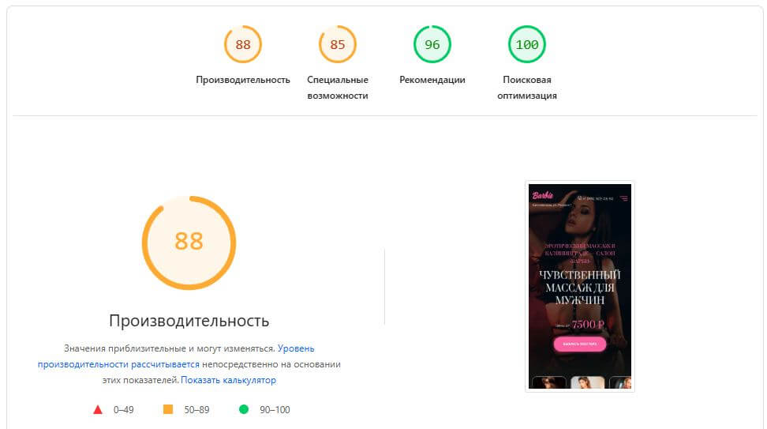
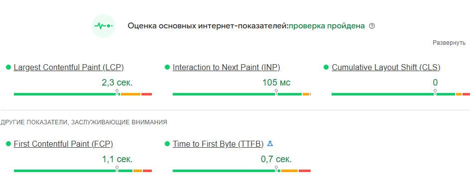

Окупилась ли смена стратегии 8 апреля? Сравнение 14 дней до переключения на ручное управление со сниженными ставками
и 15 дней после.
Смена стратегии оправдана. Сэкономили 50% бюджета при росте кликов на 42% и удвоении охвата.
Клик стал дешевле в 2,8 раза. Рекомендуем оставить ручное управление.
Оговорка о данных:
все метрики в этом отчёте — верхняя воронка (показы, клики, охват). Данных о конверсиях из Метрики в выгрузке нет —
окупились ли сэкономленные деньги в продажах, по этим цифрам сказать нельзя. Рекомендуем подключить цели Метрики к кампании.
Расход
−49,9%
65 863₽
было 131 425 ₽ · экономия 65 562 ₽
Клики
+41,9%
227
было 160 · +67 кликов за 15 дней
Охват уникальных
+106,1%
1 074
было 521 · +553 уникальных пользователя
Цена клика
−64,7%
290₽
было 821 ₽ · клик в 2,8 раза дешевле
Бюджет: вдвое меньше
Дневной расход 9 388 ₽ → 4 391 ₽. За 15 дней нового режима потратили столько же, сколько за 7 дней старого.
P1 · автостратегия · 14 дн.P2 · ручное · 15 дн.
Хронология: что и когда поменялось
8 апреля столбцы расхода резко падают, но линия кликов продолжает расти — главное наблюдение этого отчёта.
Расход P1Расход P2Клики
Цена клика — главный выигрыш
7 апреля платили 1 102 ₽ за клик, 8 апреля — уже 595 ₽. Средний CPC в P2 в 2,8 раза дешевле.
×2,8 дешевле
Позиция: цена экономии
При сниженных ставках реклама сместилась со 2-й на 3,5-ю позицию. Это ожидаемо и заложено в план.
+1,46 поз.
CTR упал — это не падение качества
CTR с 22% до 13% — следствие того, что позиция стала ниже. Креативы и аудитория те же; меньше людей видят рекламу первой.
−9 п.п.
Доля выигранных аукционов
«Объём трафика» — косвенная метрика доли выигрышей⁴. Упал со 100 до 62 — теперь ловим 61% доступного трафика вместо 100%.
−39%
Где показывались: меньше «премиума», больше «прочего»
«Спецразмещение» — рекламный блок над выдачей (премиум). «Прочее» — гарантированные показы внизу страницы и сети.
−34 п.п.
82%→47%
доля спецразмещения
P1 · до 8 апреля596 показов в спец. · 134 в прочих
Спец 81,6%
18,4%
P2 · с 8 апреля823 в спец. · 922 в прочих
Спец 47,2%
Прочее 52,8%
Спецразмещение
596 → 823 показов +38%
Прочие позиции
134 → 922 показов +588%
Откуда пришли дополнительные показы
Из 1 015 дополнительных показов после 8 апреля 78% пришло из «прочего» — гарантированных показов внизу страницы и сетей.
В премиум-блоке мы не исчезли — показались даже больше, но рост в основном за счёт нижних позиций.
СпецразмещениеПрочее
Дневная сводка 29
Все дни наблюдения — для самостоятельной проверки
День
Стратегия
Расход, ₽
Показы
в т.ч. спец.
Клики
CPC, ₽
Поз.
CTR, %
Охват
Барби vs Спальня
Спальня покупает позицию, не клики. За дополнительные 107 тыс. ₽ в апреле (+72% к бюджету Барби)
она держит позицию выше на 1 строку и в 1,3 раза чаще попадает в премиум-блок над выдачей.
Но в абсолютах получает меньше: −38% показов, −30% охвата, и даже немного меньше кликов.
Цена клика, ₽
Барби
403₽
Спальня
733₽
Спальня платит за клик ×1,8 дороже (+82%)
Средняя позиция
Барби
3,35
Спальня
2,49
Спальня держит позицию выше на 0,86 (меньше = лучше)
Доля спецразмещения
Барби
52%
Спальня
68%
Спальня в премиум-блоке +16 п.п. чаще
Цена 1 уникального
Барби
88₽
Спальня
216₽
Касание с пользователем у Спальни ×2,5 дороже
Кривая «деньги → позиция»
Каждая точка — один день. Чем правее (CPC выше), тем выше позиция (точка выше). Спальня сидит правее и выше — это
стабильное соотношение, а не разовый скачок.
БарбиСпальня
Где показывались за апрель
Какая доля показов пришлась на премиум-блок над выдачей.
Барби · 2 720 показов1 417 / 1 303
Спец 52%
Прочее 48%
Спальня · 1 683 показа1 144 / 539
Спец 68%
Прочее 32%
Спец, абс. показы
Барби 1 417 · Спальня 1 144
Премиум-аукционов
Барби выиграла больше*
CPC по дням — обе кампании
Спальня стабильно дороже Барби почти каждый день. Точка сближения 20 апреля (Спальня 468 ₽, Барби 278 ₽) показывает,
что у Спальни тоже бывают «дешёвые» дни — значит, потенциал для оптимизации есть.
Барби · ø 403 ₽Спальня · ø 733 ₽
Расход в день, ₽
Спальня в типичный день тратит ~×1,8 больше: медиана 8 547 ₽ против 4 667 ₽ у Барби.
×1,8
Распределение по дням · мин · медиана · макс
Клики в день
У обеих кампаний медиана — 14 кликов/день. В типичный день идут вровень; разница — в пиках.
≈ равно
Распределение по дням · мин · медиана · макс
Показы в день
Барби в типичный день — ×1,5 больше показов: медиана 107 против 70 у Спальни.
×1,5
Распределение по дням · мин · медиана · макс
Что с этим делать
Два сценария интерпретации — какой верный, покажут только данные о конверсиях
сценарий 1
Премиум окупается
Если в Спальне CR (конверсия в заявку) хотя бы в 2,5 раза выше, чем у Барби — переплата за клик окупается. Логика: премиум-позиция = тёплый трафик с готовностью к покупке. Тогда оставить как есть.
сценарий 2
Переплата без отдачи
Если CR у Спальни и Барби сопоставим — Спальня переплачивает за позицию, а не за клиентов. Тогда повторить кейс Барби: понизить ставки на 25–30%, потерять ~1 позицию, но выиграть в показах и охвате за те же деньги.
Гипотеза для теста. Понизить ставки Спальни на 25–30% на 2 недели на части ключей. Ожидаемый эффект по аналогии с Барби: позиция упадёт примерно с 2,5 до 3,3, CPC снизится в 1,5–2 раза. Если число заявок не упадёт пропорционально — ставки имеет смысл оставить ниже.
Поиск — Калининград
ID 116 957 090Активна
Чистая поисковая кампания, концентрация на топ-позициях. 95% бюджета (181 тыс. ₽ из 191) идёт в премиум-блоки над выдачей —
спецразмещение и эксклюзив. Реклама почти всегда занимает позицию 1.0–1.05. Из 426 поисковых запросов
половина бюджета — 5 главных «эротический массаж + город». Дешевле всего обходятся группы
«лингам» (CPC 250 ₽) и «интим» (290 ₽) — вдвое дешевле общего среднего.
Расход за апрель27 дней
190 760₽
в среднем 7 065 ₽/день
КликиCPC 444 ₽
430
~16 кликов/день · CTR 10,8%
Средняя позициятоп-блок
2,58
в спец. 1,05 · в эксклюзиве 1,00
Охват уникальных158 ₽/уник.
1 206
~45 уник./день · 3 990 показов
Куда уходит бюджет
95% денег — в премиум: спецразмещение над выдачей и эксклюзив с гарантированной позицией 1.
Спецразмещение — основа объёма, эксклюзив — точечная добавка. 22 апреля — день почти без расхода
(197 ₽, 3 клика): что-то приостанавливалось, стоит выяснить причину.
СпецЭксклюзПрочееДинам.
Дневной расход и клики
Кампания работает ровно: 5–11 тыс. ₽ в день, 14–30 кликов. Пиковые дни — 6 апреля (27 кликов) и 14 апреля (30).
Провал 22 апреля хорошо виден — расход почти ноль.
РасходКлики
Темы запросов: где деньги, где дёшево
Сгруппировано по семантике. Половина бюджета уходит на «эротический массаж + город». Самая выгодная по CPC группа —
«лингам»: 250 ₽ против 444 ₽ среднего.
Топ-12 запросов из 426
По расходу. Запросы — как есть из выгрузки Я.Директа.
#
Запрос
Расход
Кл.
CPC
Дневная сводка 27
Все дни апреля — для самостоятельной проверки
День
Расход, ₽
Показы
в т.ч. спец.
в т.ч. эксклюз.
Клики
CPC, ₽
Поз.
CTR, %
Охват
SEO продвижение
barbie-salon.ru · КалининградПервый месяц работ
SEO работает. За первый месяц поисковый трафик вырос на +23% к мартовскому среднему —
с 211 до 261 визитов в неделю. Последняя неделя апреля — рекордные 302 визита,
+43% к уровню до старта работ. Сильнее всего отозвался Яндекс (+44%), что важно для регионального бизнеса в Калининграде.
Последняя неделя
+35%
302визита
было 224 в стартовой неделе · +78 визитов
Среднее за апрель
+23%
261в неделю
в марте было 211 · +50 визитов/нед
Яндекс
+44%
128визитов
было 89 · регион — главный фокус
Google
+29%
172визита
было 133 · отклик на тех. оптимизацию
Динамика поискового трафика по неделям
Серая зона — март (без SEO-работ). Маркер 1 апреля — старт работ. Видно, что после двух недель «инерционного» периода
(нужно время на индексацию и переоценку) трафик пошёл вверх и закрыл апрель на максимуме.
ЯндексGoogle
Что было сделано 5 направлений
1
Контент и семантика
7 статей · текст на главной · мета-теги
Поисковики оценивают, насколько глубоко сайт раскрывает тему. Если на сайте только страница услуг — он один из тысяч.
Если есть статьи на смежные темы — поисковик видит, что сайт разбирается в нише, и поднимает по всем связанным запросам.
Это называется Topical Authority (авторитет по теме). Аналог: «Википедия» ранжируется почти по любому запросу,
потому что глубоко покрывает темы.
7 тематических статей · кластеры по техникам массажа
5 из 7 статей нацелены на конкретные кластеры запросов (нуру, счастливый конец, веточка сакуры, для пар, в 4 руки) —
и все 5 кластеров вошли в топ-10 за месяц (см. секцию «Позиции» ниже).
Ещё 2 статьи (тантрический vs эротический, топ-10 техник) — для расширения общей экспертизы по теме.
Дополнительно: внутренние ссылки между статьями усиливают главную страницу.
Добавлен описательный текст с целевыми запросами в нижней части главной — «Эротический массаж в Калининграде — салон «Барби»».
Главная страница — самая трастовая на сайте (получает больше всего внешних ссылок), и текст здесь даёт максимальный эффект
на коммерческие запросы вроде «эротический массаж калининград», «салон эротического массажа».
Оптимизация мета-тегов
Переписаны Title, Description и H1 на ключевых страницах. Title — самый весомый сигнал релевантности для поисковиков
(~30% веса всех on-page факторов). Description не влияет на позиции напрямую, но влияет на CTR в выдаче —
точный и продающий сниппет даёт больше переходов с того же объёма показов.
2
Техническая оптимизация
скорость · отзывчивость · стабильность вёрстки
Скорость сайта — официальный фактор ранжирования Google с 2021 года (Core Web Vitals — «основные метрики сайта»).
Медленный сайт ранжируется хуже и теряет посетителей: ~50% мобильных пользователей закрывают страницу,
которая грузится дольше 3 секунд. Ускорение работает в обе стороны — на позиции в выдаче и на конверсию посетителей в клиентов.
Текущие оценки PageSpeed Insights · скриншоты из Google
Все 4 категории — в зелёной или жёлтой зоне (от 85 баллов). SEO 100/100 — максимум возможного.
Производительность и Спец.возможности — в жёлтой зоне (88 и 85), требуют точечных правок чтобы выйти в зелёную (≥90).

Core Web Vitals · проверка пройдена, все три метрики в зелёной зоне
Core Web Vitals — официальный набор из 3 метрик Google: LCP (скорость загрузки), INP (отзывчивость), CLS (стабильность вёрстки).
С 2021 года входит в факторы ранжирования. Все метрики у нас в норме, плюс дополнительные FCP и TTFB.

3
Внешние ссылки на трастовых СМИ
3 размещения · перенос траста на сайт
Внешние ссылки — главный фактор ранжирования. Поисковики считают: чем больше качественных сайтов ссылается на ваш —
тем он авторитетнее. Ключевое — «качественных»: 1 ссылка с трастового СМИ перевешивает сотни ссылок со шлак-каталогов.
Качество измеряется метриками: ИКС (Индекс Качества Сайта в Яндексе),
DR (Domain Rating от Ahrefs), MOZ DA (Domain Authority).
Чем выше — тем больше веса передаётся через ссылку.
3 размещения статей со ссылкой на barbie-salon.ru
0225.ru
Бобруйский новостной портал. Категория «СМИ и порталы».
Позиции по ключевым запросам 96 ключей · до и после
Прямое доказательство, что 7 написанных статей сработали. Из 96 отслеживаемых запросов
в топ-10 Яндекса попало 81 (84%) — было 44 (46%).
5 новых тематических групп (нуру, счастливый конец, веточка сакуры, для пар, в 4 руки) стартовали
с 0 запросов в топ-10 и через месяц оказались в нём на 55–100%.
В топ-10 Яндекса
+84%
81из 96
было 44 (46%) · стало 84% ключей
В топ-10 Google
+66%
68из 96
было 41 (43%) · стало 71% ключей
Видимость · Яндекс⁶
+55%
52,3
было 33,7 · больше топ-3 = выше видимость
Видимость · Google
+162%
28,0
было 10,7 · рост в 2,6 раза
Распределение запросов по топ-зонам · до и после месяца SEO
Цветные сегменты — сколько запросов попало в каждую зону выдачи. Зелёное (топ-3) и сине-фиолетовое (топ 4–10) — то,
ради чего работаем. Серое (нет в топ-100) — сократилось с 52→13 в Яндексе и 54→20 в Google.
Топ-10 по группам запросов · Яндекс
Старая группа «Эротический массаж» уже была в топе и осталась. 5 новых групп (под написанные статьи)
стартовали с 0% и взлетели до 55–100%.
Yandex
Топ-10 по группам запросов · Google
В Google картина похожая. Группа «Веточка сакуры» — слабее по охвату (33%), это нормально:
в Google продвижение по узким брендированным запросам идёт медленнее.
Google
Самые впечатляющие приросты 15
Запросы, которые поднялись с «не в топ-100» (101) сразу в топ-3